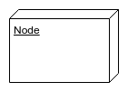
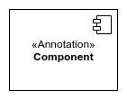

Principaux éléments graphiques
| Nom | Représentation | Description |
|---|---|---|
| Frame |  |
Elément permettant d'identifier un diagramme par son label. |
| Node |  | Permet d'identifier les éléments physiques du système (serveur web, serveur de base de données...). |
| Component |  | Représente une application, un logiciel. |